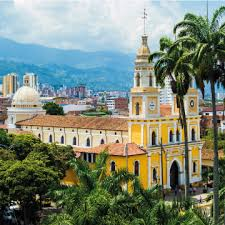
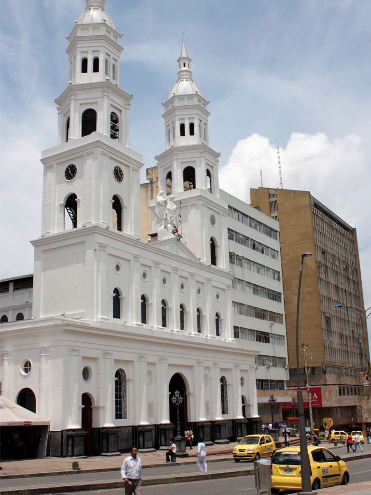
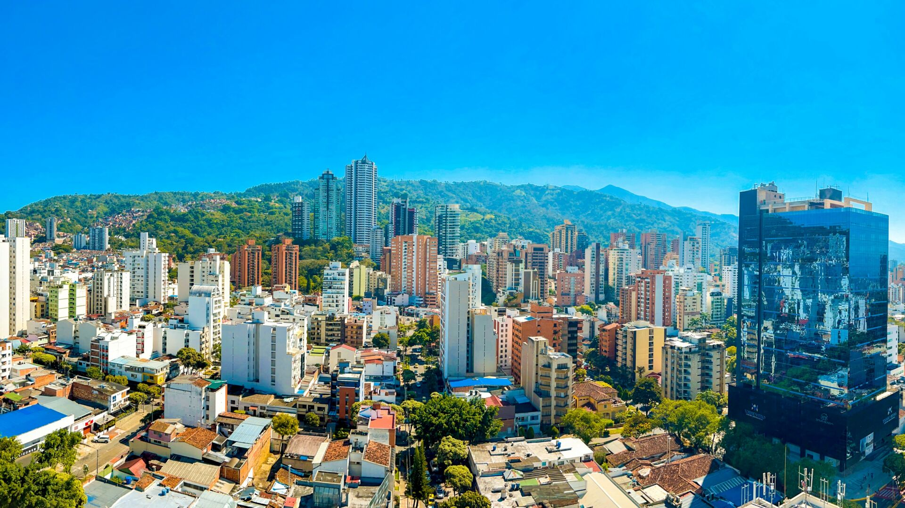

Bucaramanga:
Es una ciudad moderna, lo que no quita que también desborde de tradición y leyendas. Se la considera uno de los pueblos más encantadores de los Andes colombianos del este gracias al clima ideal que invita a cualquiera que decida visitarlo a disfrutar de sus muchos atractivos al aire libre. En cuanto llegues, verás verde por aquí y verde por allá.
Bucaramanga es una de las ciudades más verdes del país debido a la envidiable selección de parques desperdigados por toda la zona urbana. Además, es cuestión de tomar el auto y recorrer una distancia corta para toparte con algunos de los paisajes montañosos más majestuosos de Colombia.
¿Tienes ganas de conocer una ciudad colombiana contemporánea, pero quieres evitar las grandes metrópolis? Bucaramanga te está llamando. Allí, encontrarás una población joven y dinámica, excelentes restaurantes y una fantástica vida nocturna.
Te gustaria conocer la historia de la ciudad y todo sobre ellas lo podras ver dando clic Aquí si deseas ver mas imagenes Haz clic Aquí y si te animas a viajar y conozer Haz clic Aquí
 Я кохаю тебе, коханий мій.
Я кохаю тебе, коханий мій.